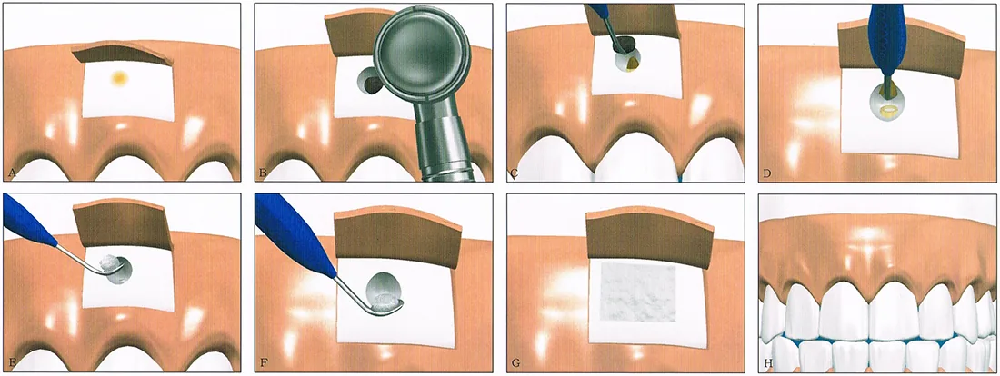

자연치아 살리기(신경치료)
안중사과나무치과는 치아를 뽑기 전에 살릴 수 있는지 먼저 봅니다. 신경치료로 어려우면 치근단 절제술, 치아재식술까지 검토합니다. 심하게 병든 치아도 살리려는 '자연치아 살리기 운동'에 함께하고 있습니다.
한눈에 보기
- 치료
- 신경치료 · 치근단 절제술 · 치아재식술
- 신경치료
- 8단계
(감염된 신경 확인부터 진료 완료까지) - 신경치료 뒤
- 약해진 치아는 크라운으로 씌워 보호
- 비용
- 진찰 후 항목별로 미리 안내합니다


신경치료 여덟 단계
심한 충치나 외상으로 신경이 상했을 때 하는 치료입니다. 상한 신경 조직을 없애고 소독한 뒤, 신경과 혈관이 있던 공간을 알맞은 재료로 채웁니다.
감염된 신경
신경 제거
신경 길이 측정
신경관 세척
신경관 확대
신경관 건조
빈 신경관을 약제로 밀봉
진료 완료
치근단 절제술
세균 감염으로 치아 뿌리 끝 염증이 심하거나, 신경치료를 받은 뒤에도 뿌리 끝에 염증 주머니

치아재식술
병든 치아를 뽑아 뿌리 쪽 염증을 없애고, 뽑은 자리 잇몸 속 염증도 깨끗이 없앤 뒤 그 치아를 다시 심습니다.
뿌리 끝 염증
뽑아서 염증 제거
제자리에 다시 심기
자주 묻는 질문
신경치료는 어떻게 하나요?
상한 신경 조직을 없애고 소독한 뒤, 신경과 혈관이 있던 공간을 알맞은 재료로 채워 넣습니다. 감염된 신경 확인부터 진료 완료까지 여덟 단계로 진행합니다.
신경치료를 해도 낫지 않으면 뽑아야 하나요?
뿌리 끝 염증이 남거나 다시 신경치료를 하기 어려우면, 염증과 뿌리 끝을 함께 없애는 치근단 절제술이나 치아를 뽑아 염증을 없앤 뒤 다시 심는 치아재식술을 검토합니다.
진료시간 · 오시는 길
031-683-7575경기도 평택시 안중읍 안중로 132
- 성심주차장을 이용하시면 주차권에 병원 도장을 찍어 드려 무료로 주차할 수 있습니다
(이면도로 주차는 유료). - 본원 뒤 주차장은 자리가 좁습니다. 이용하실 때는 주차권을 받아 가셔야 나가실 수 있습니다.
진료시간
- 월
- 전체
- 오전 9시 ~ 오후 6시교정과 오전 10시 ~ 오후 6시
- 화
- 전체
- 오전 9시 ~ 오후 8시
- 수
- 3층
- 오전 9시 ~ 오후 6시
- 목
- 2층
- 오전 9시 ~ 오후 8시
- 금
- 전체
- 오전 9시 ~ 오후 8시2층 오전 9시 ~ 오후 6시교정과 오후 2시 ~ 8시
- 토
- 전체
- 오전 9시 ~ 오후 2시점심시간 없음
- 점심
- 평일
- 오후 1시 ~ 2시
- 휴진
- 일요일 · 공휴일 휴진